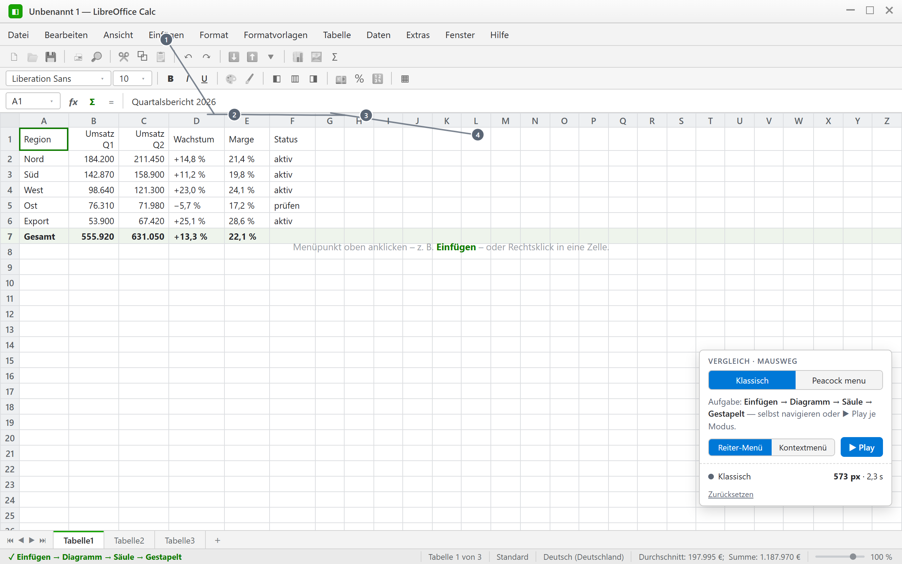
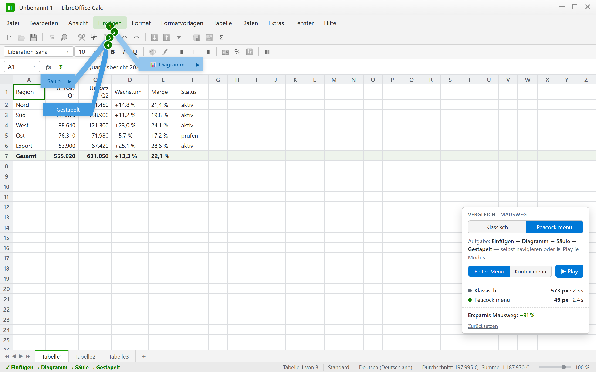

Peacock Menu: Jede Menüebene öffnet sich exakt dort, wo Sie sie brauchen.
Peacock Menu bringt jede Menüebene automatisch dorthin, wo Ihr Cursor bereits steht. Sobald Sie einen Eintrag wählen, wird genau dieser Punkt zum neuen Ausgangspunkt der nächsten Ebene — die verfügbaren Optionen fächern sich unmittelbar um ihn herum auf, wie die Augen einer Pfauenfeder. Das Ergebnis ist eine durchgehend flüssige, schnelle und intuitive Navigation, die in unabhängigen Vergleichsszenarien bis zu 25–33 % weniger Zeigerbewegungen benötigt als klassische Dropdown-Menüs — unabhängig von der Tiefe der Menüstruktur.
Interaktiver Prototyp mit dynamischer Menüführung
Klicken Sie auf einen beliebigen Menüpunkt, beispielsweise „Einfügen", um Peacock Menu live zu erleben. Die verfügbaren Optionen werden kontextbezogen direkt am Klickpunkt eingeblendet. Jede anschließende Auswahl definiert einen neuen Mittelpunkt, sodass sich das Menü kontinuierlich an Ihrer aktuellen Cursorposition ausrichtet und jederzeit optimal erreichbar bleibt.
Prototyp (Klickdummy) zur Verfahrensdemonstration — keine LibreOffice-Software. Am besten mit Maus am Desktop erleben. Auf Mobilgeräten empfiehlt sich die Vollbild-Ansicht im Querformat.
Ein Klick, ein sichtbarer Unterschied
Zwei Aufzeichnungen aus dem interaktiven Prototyp zeigen denselben Navigationsvorgang — einmal mit klassischer Kaskadennavigation, einmal mit Peacock Menu, jeweils mit nummeriertem Mausweg und Messpanel. Sie zeigen, wie viel unnötige Mausbewegung, Zeit und Aufmerksamkeit das patentierte Verfahren einspart: schnellere Navigation in komplexen Anwendungen, spürbar höhere Produktivität bei wiederkehrenden Arbeitsschritten und eine geringere Belastung für Hand und Handgelenk.


Echte Aufzeichnungen aus dem interaktiven Prototyp — jederzeit selbst reproduzierbar über ▶ Play im Vergleichspanel der Live-Demo.
Was bedeutet das für Ihren Arbeitstag?
Ein Navigationsvorgang beschreibt die vollständige Auswahl eines Zielbefehls innerhalb einer mehrstufigen Menüstruktur — zum Beispiel den oben demonstrierten Weg von „Insert“ über „Filter“ und „Color“ bis „Blue“. Dieselbe, oben live gemessene Zeitersparnis pro Vorgang summiert sich über den Arbeitstag, die Woche und das Jahr. Stellen Sie ein, wie viele vergleichbare Navigationsvorgänge in Ihrer Anwendung typischerweise pro Tag anfallen:
Drei Regeln, ein Prinzip — die Peacock-Menu-Logik
Intuitive Auswahl durch Peacock-Elemente
Die Menüpunkte erscheinen als beschriftete Sprechblasen, die über einen Führungsarm mit dem aktuellen Fokuspunkt verbunden sind — wie die Augen einer Pfauenfeder. Blase und Führungsarm reagieren gleichermaßen auf Klicks, wodurch sich die nutzbare Interaktionsfläche vergrößert.
Intelligente Ausrichtung auf den letzten Auswahlpunkt
Jede neue Menüebene orientiert sich automatisch am zuvor ausgewählten Element. Die Führungsarme aller untergeordneten Einträge laufen auf diesen Punkt zusammen, sodass der nächste Interaktionsbereich genau dort entsteht, wo sich der Mauszeiger nach der Auswahl bereits befindet.
Optimale Nutzung des verfügbaren Raums
Die Positionierung der Menüpunkte passt sich automatisch an die Anzahl der verfügbaren Einträge sowie den freien Bildschirmbereich an. Reicht der Platz nicht für alle Einträge, übernimmt ein Platzhalter-Element (Bezugszeichen 721) die restlichen Optionen.
„… der Sprechblasen-Arm eines jeden Elements der Untermenüliste verbindet das Element der Untermenüliste mit dem zuvor gewählten Element der Menüelementliste." EP 2 616 913 B1, Anspruch 1 (kennzeichnender Teil) — Grundprinzip von Peacock Menu
Weniger Zeigerweg, weniger Belastung: RSI im Blick
Schon die Patentschrift selbst benennt das Problem, das Peacock Menu adressiert — als Ausgangspunkt der Erfindung, nicht als nachträgliches Marketingargument:
„… the user can suffer a loss of time and stress to his/her wrist from repetitive strain." US 8,756,529 B2, Hintergrund der Erfindung („Background of the Invention")
Was ist RSI?
„Repetitive Strain Injury" bzw. „Repetitive Strain Syndrome" (RSI) ist ein Sammelbegriff für Beschwerden an Muskeln, Sehnen und Nerven, die durch häufig wiederholte, oft kleinräumige Bewegungen entstehen können — etwa Überlastungsreaktionen an Hand, Handgelenk, Unterarm oder Schulter. Typische Risikofaktoren sind hohe Wiederholungsraten, ungünstige Gelenkstellungen und zu geringe Erholungspausen zwischen den Bewegungen — Faktoren, die in der arbeitsmedizinischen Literatur zur Bildschirmarbeit seit Langem beschrieben werden.
Wie tragen Mausbewegungen dazu bei?
Jeder Klick in einem tief verschachtelten Dropdown-Menü erzwingt eine erneute, oft weite Zeigerbewegung — über den Tag summiert sich das bei intensiver Bildschirmarbeit zu einer erheblichen Zahl kleinteiliger, sich wiederholender Handgelenksbewegungen. Genau diesen Effekt beschreibt die Patentschrift als Ausgangsproblem klassischer, linear angeordneter Menülisten.
Der strukturelle Ansatz von Peacock Menu
Peacock Menu setzt nicht an der Behandlung, sondern an der Ursache an: Weil jede Menüebene am zuletzt gewählten Punkt konvergiert, verkürzt sich die pro Interaktion nötige Zeigerbewegung strukturell — in den DEMO-V6-Referenzszenarien um 25–33 %. Weniger und kürzere Zeigerbewegungen pro Interaktion sind einer der allgemein anerkannten Stellhebel in der Bildschirmarbeitsplatz-Ergonomie.
Patentfakten
Anspruchsübersicht (1–15) anzeigen
| 1 | Verfahren; Kennzeichen: Kind-Arm verbindet Untermenü-Eintrag mit dem gewählten Eltern-Eintrag; Auswahl über Arm/Blase |
| 2 | Referenzpunkt = Root-Menüeintrag oder kontextabhängiger Punkt |
| 3 | Auswahl per Zeigevorrichtung und/oder Tastatur |
| 4 | Anordnung: Linie, Kaskade, Doppelkaskade, umgedrehte Pyramide, Fächer, Bogen |
| 5 | Funktion = Anwendung starten, Pop-up öffnen oder weiteres Call-out anzeigen |
| 6 | Sprechblase enthält Textlabel und/oder Symbol |
| 7 | Prozessor berechnet Position aus Anzahl, freiem Raum und Präferenzen |
| 8 | Mehrere Ebenen als Sets von Call-outs darstellbar |
| 9 | Sofortige Verarbeitung bei Fokus auf Arm/Blase |
| 10 | Beschreibung beim Hover über Arm/Blase |
| 11 | Hervorheben bei Fokus/Hover/Auswahl |
| 12 | Pfad-Kollaps nach finaler Auswahl (Root/Referenzpunkt bleibt) |
| 13 | Platzhalter-Element (721) bei Overflow |
| 14 | Root als horizontal/vertikal/Kontext/Referenzpunkt |
| 15 | Computerprogramm-Produkt, das Anspruch 1 ausführt |
Für Investoren & Lizenznehmer
Peacock Menu basiert auf zwei bereits erteilten Patenten in zwei Kernmärkten, einem funktionsfähigen Prototyp und einer im Quelldokument selbst nachgewiesenen Effizienzsteigerung. Der Mechanismus ist anwendungsunabhängig und lässt sich in praktisch jede GUI mit mehrstufigen Menüs integrieren.
Gespräch aufnehmen
Der gezeigte Prototyp demonstriert Peacock Menu im LibreOffice-Calc-Kontext. Für Fragen zu Lizenzierung, Integration oder Investment in die Weiterentwicklung nehmen Sie gern Kontakt auf.
Dr. Kay Dirk Ullmann
Frankfurt am Main
SolveTrail GbR
Prototyping & Softwareentwicklung